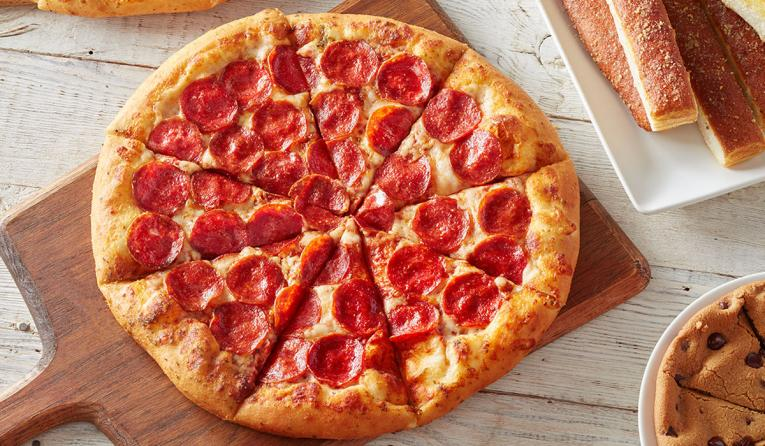

ABOUT US... |
 |
More than 60 years ago, the Carney brothers borrowed $600 from their mom and set out to change the way the world experienced pizza. From our modest beginnings
in 1958, Pizza Hut has grown to become the largest pizza company in the world. We have more than 19,000 restaurants in over 100 countries. No matter where you
find us, we’re making sure each meal our customers enjoy is delicious, bold, and one-of-a-kind.
We don’t just make pizza. We make people’s days. Pizza Hut was built on the belief that pizza night should be special, and we carry that belief into everything
we do. We deliver more pizza, pasta and wings than any other restaurant in the world. A true innovator in the pizza category, we were not only the first to
provide America with Pan Pizza, but we were also the first ever to deliver pizza in space! We understand how to best serve our customers through tried and
true service principles. We create food we’re proud to serve and deliver it fast, with a smile.
All of this is made possible by unlocking the potential of our team members. We promise that at Pizza Hut, you can become your best, make friends and have fun.
Because we’re the pizza company that lives life unboxed.
And yes, we are pizza people. But we’re also human people; we lead with our hearts and believe in giving back to the community. Through the U.S. BOOK IT!
Program,Pizza Hut supports over 100,000 classrooms, 60,000 homeschool families and 120,000 parents each year by rewarding Pre-K-6th grade students who
meet reading goals with pizza and praise. We have also committed to impacting the lives of 100 million people around the world and unlocking their potential
through literacy and reading with BOOK IT! in the Community. One dollar of every BOOK IT! Bundle purchased goes to our non-profit partner, First Book, who
supports underserved communities with diverse books, classroom materials and more.
We’re also focused on reducing food waste and fighting hunger in the communities we serve through our Harvest Program. Since 1992, Harvest has donated over 100
million pounds of food to local communities.
|  |
 |
|